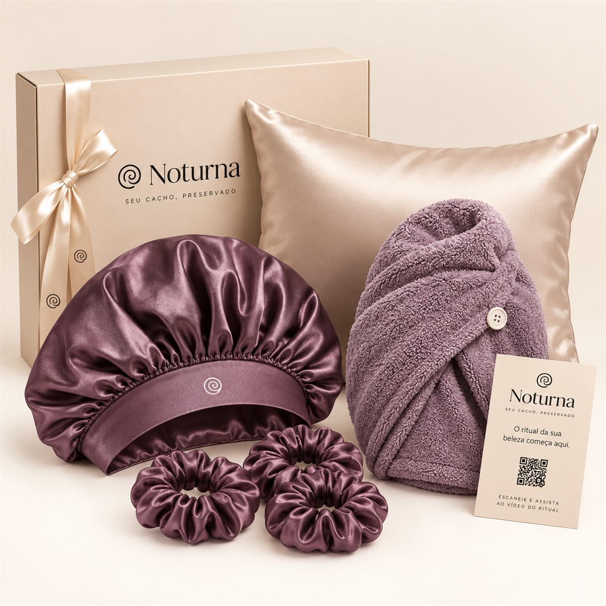
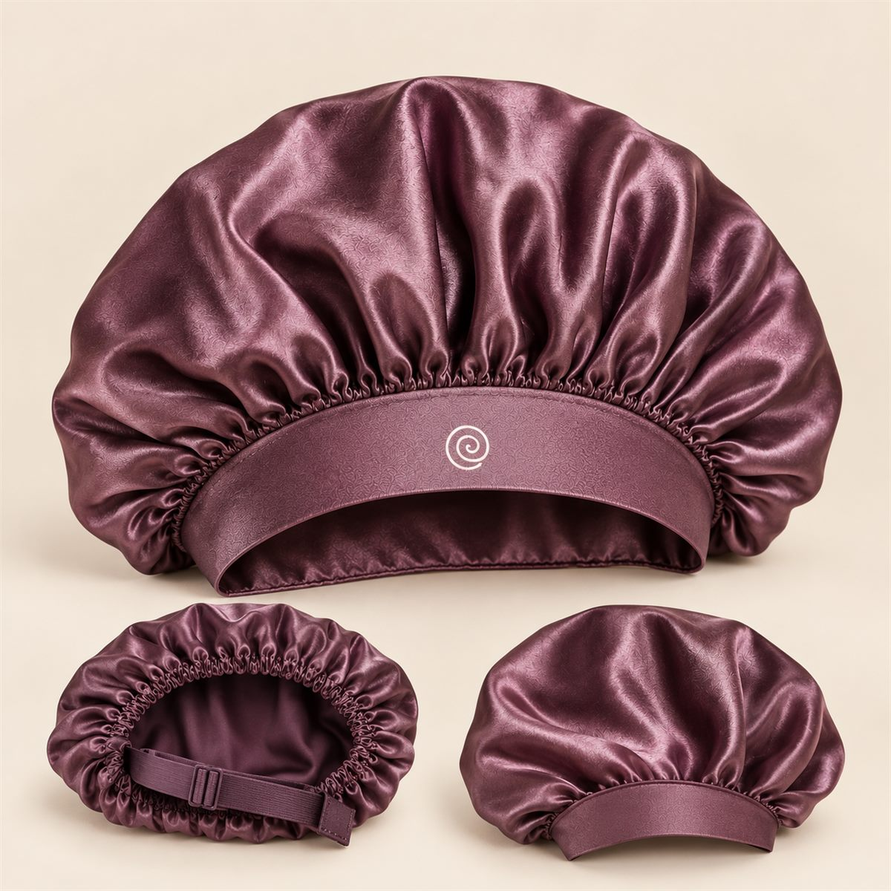
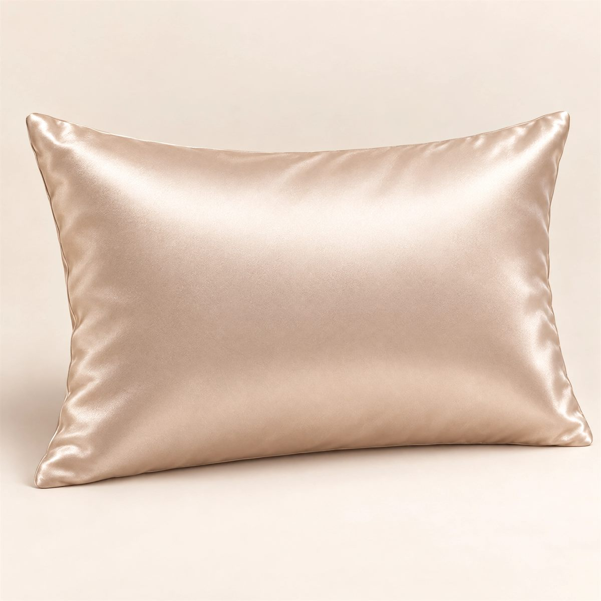
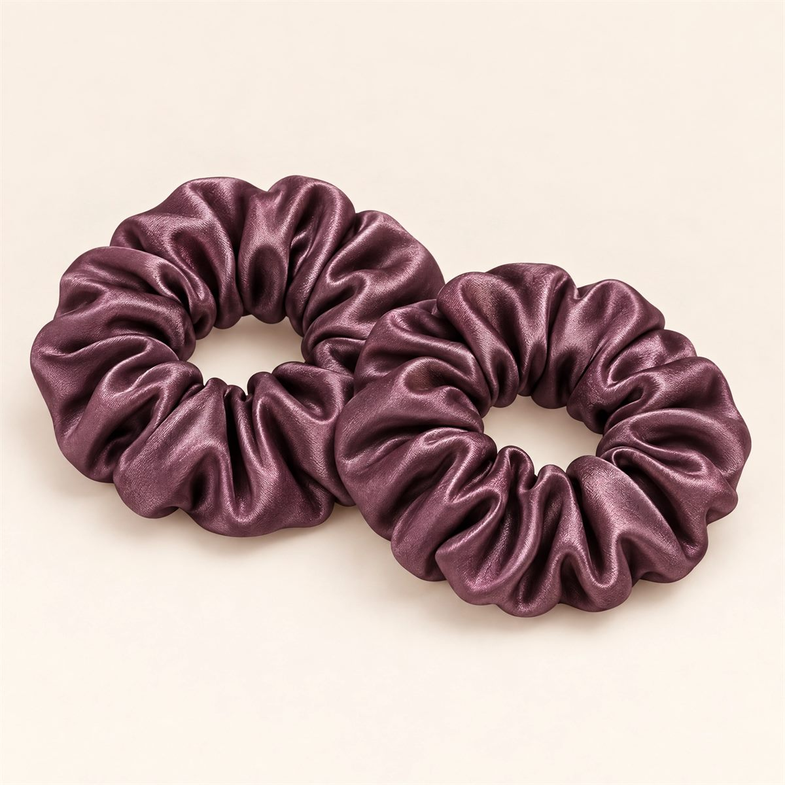
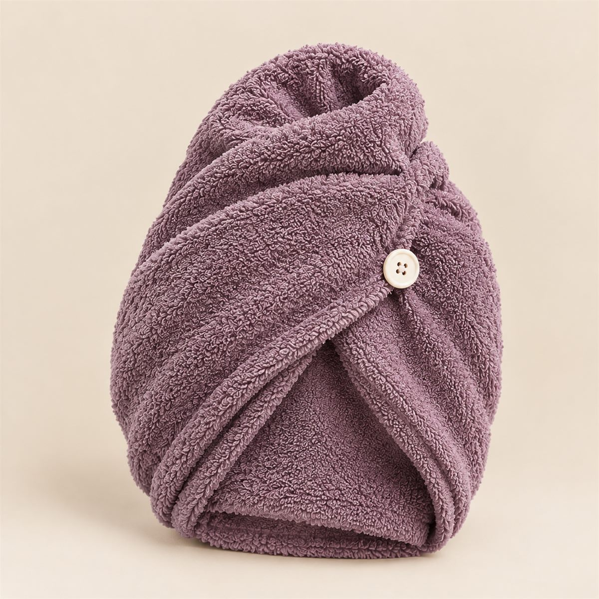

01 Atrito
A cada virada na cama, o fio esfrega no tecido. A fibra do algodão é áspera: arrepia a cutícula, gera frizz e desmancha a definição. No cetim, a superfície é lisa e o cacho desliza.





Tudo o que o seu cacho precisa para atravessar a noite: menos atrito, menos frizz e a definição de ontem quando você acorda.
R$ 45,51 no Pix (5% de desconto) ou 4x de R$ 11,98 sem juros
O que tem no kit
Cada uma resolve um momento diferente, do banho até o travesseiro.
Tamanho G, com espaço de sobra para o volume e o abacaxi. A faixa ajustável segura sem apertar a testa. Dupla face: vire do lado que preferir.
Para as noites em que a touca sai no meio do sono. O fio desliza no cetim em vez de enroscar. Serve em travesseiro padrão, com fechamento envelope.
Largos e macios, para prender o abacaxi no alto da cabeça sem marcar nem quebrar o fio. Três, porque um sempre some.
Tira o excesso de água sem esfregar, então o cacho seca definido e sem frizz de toalha. Fecha com botão e fica firme enquanto você se arruma.
Comprando cada peça separada, você pagaria R$ 117,90. No kit, sai por R$ 47,90.
Por que acontece
Seu cabelo passa umas oito horas por noite encostado no travesseiro. Nesse tempo, três coisas trabalham contra a finalização que você fez com tanto carinho.
A cada virada na cama, o fio esfrega no tecido. A fibra do algodão é áspera: arrepia a cutícula, gera frizz e desmancha a definição. No cetim, a superfície é lisa e o cacho desliza.
Fronha de algodão absorve a água e parte do finalizador que ficou no fio. Cabelo cacheado e crespo já tende a ser mais seco, e a hidratação que era dele fica no travesseiro.
Dormir em cima dos cachos achata a raiz e amassa o formato. Prender no alto e cobrir com a touca tira o peso da cabeça de cima deles.
O ritual
Vira hábito na primeira semana. Está tudo no cartão que vem no kit, com QR code para o vídeo.
Depois de lavar e finalizar, envolva o cabelo no turbante por 10 a 20 minutos. Ele puxa o excesso de água sem esfregar.
Na hora de dormir, junte os cachos no alto da cabeça e prenda bem frouxo. O comprimento fica em cima, longe do peso.
Cubra com a touca e deite na fronha de cetim. Se a touca escapar de madrugada, a fronha segura as pontas.
De manhã, solte o abacaxi, sacuda a raiz com os dedos e pronto: é o cacho de ontem.
Kit fechado: as peças vêm juntas e não é possível trocar itens ou cores dentro do kit. Quer só uma peça? Ela também é vendida avulsa.
Manifesto
A Noturna nasceu de manhãs perdidas refazendo a finalização. A gente acredita que cabelo cacheado e crespo é para ser vivido do jeito que ele é, com volume, com forma, com personalidade. Nosso trabalho começa quando você apaga a luz: cuidar do cacho enquanto você descansa, para que ele acorde tão orgulhoso quanto foi dormir.
Com carinho, Noturna.
Três scrunchies novos a cada 3 meses, em cores que só quem é do clube recebe. Porque scrunchie some, e cacho gosta de novidade.
R$ 34,90 a cada 3 meses
Cobrança trimestral. Cancele quando quiser, direto na sua conta.
Quem já dorme com a Noturna
“Eu achava que acordar com o cabelo amassado era destino. Duas semanas de abacaxi e touca e agora o cacho dura até o terceiro dia.”
“Tô em transição e a raiz sempre amanhecia achatada. A touca G coube todo o meu volume, coisa rara.”
“A fronha foi a surpresa. Minha touca sai toda noite, e agora nem me preocupo mais.”
Dúvidas
Não achou a sua? Fale com a gente pelo WhatsApp, respondemos em horário comercial.
A touca é tamanho G, feita para cabelo volumoso: cabe black power, tranças e o abacaxi sem esmagar. A faixa é ajustável, então também fica firme em quem tem menos volume.
A faixa ajusta de 52 a 64 cm de circunferência.
Seda é uma fibra natural. Cetim é um tipo de trama que deixa o tecido liso e brilhante, e pode ser feito de vários fios. O nosso é cetim de poliéster.
Para o cabelo, o que importa é a superfície lisa, que reduz o atrito. O cetim de poliéster entrega isso, custa menos e aguenta máquina de lavar.
Muita gente percebe já na primeira manhã, com menos frizz e o formato mais preservado. O resultado varia com o tipo de fio, a finalização e o jeito de dormir, então dê pelo menos duas semanas de ritual.
Pode. Touca, fronha, scrunchies e turbante estão nas categorias Toucas, Fronhas e Acessórios. No kit, o conjunto sai bem mais em conta e ainda vem com o cartão do ritual.
Enviamos em até 2 dias úteis após a confirmação do pagamento. O prazo de entrega depende do seu CEP e aparece no carrinho antes de fechar a compra. O frete é grátis para todo o Brasil.
Você tem 7 dias a partir do recebimento para desistir da compra e receber o valor de volta. Por higiene, touca e fronha precisam voltar sem uso e na embalagem original.
Se alguma peça apresentar defeito de fabricação, a garantia é de 90 dias.
Pix com 5% de desconto, cartão de crédito em até 4x sem juros e boleto bancário.
Acorde com o cacho de ontem. Kit Ritual da Noite por R$ 47,90. Frete grátis para todo o Brasil. 4x sem juros. 7 dias para desistir. 90 dias de garantia.